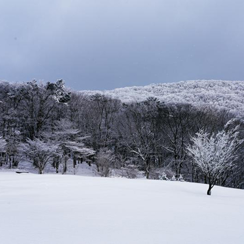

-

春は、あけぼの。
1.
春はあけぼの。やうやう白くなりゆく山ぎは、すこしあかりて、紫だちたる雲のほそくたなびきたる。
訳：春は夜明けが一番いい。山の端がだんだん白んできて、少し赤みを帯びてきて、紫色に染まった雲が細くたなびいている様子が美しい。
-
夏は夜
2.
月のころはさらなり。やみもなほ、蛍の多く飛びちがひたる。また、 ただ一つ二つなど、ほのかにうち光りて行くもをかし。雨など降るもをかし。
訳：月の美しさなんて、言うまでもない。闇夜もまた趣がある。蛍がたくさん飛び交っているのもいいし、ひとつふたつだけがほのかに光りながら行くのも風情がある。雨が降るのもまた趣がある。
-

秋は夕暮れ。
3.
夕日のさして山の端いと近うなりたるに、烏の寝どころへ行く とて、三つ四つ、二つ三つなど、飛びいそぐさへあはれなり。まいて雁などの つらねたるが、いと小さく見ゆるはいとをかし。日入りはてて、風の音、虫の 音など、はたいふべきにあらず。
訳：秋は夕暮れが一番よい。夕日が差して、山の端にとても近づいたころ、カラスが寝ぐらへ帰ろうとして、三羽四羽、二羽三羽と飛んでいくのも情趣がある。まして、雁などが列をなして、とても小さく見えるのは本当に趣深い。日がすっかり沈んで、風の音や虫の声がするのは、もう言葉にできないほど素晴らしい。
-

冬は、つとめて。
4.
雪ゆきの降ふりたるは、言いふべきにもあらず。霜しものいと白しろきも。またさらでも、いと寒さむきに、火ひなど急いそぎおこして、炭すみ持てわたるも、いとつきづきし。昼ひるになりて、ぬるくゆるびもていけば、火桶ひをけの火ひも、白しろき灰はひがちになりて、わろし。
訳：雪が降っている様子は、もう言うまでもなく美しい。霜が真っ白に降りているのもいい。それだけでなく、とても寒いときに火を急いで起こして、炭を持って歩いているのも、まことに冬らしくて風情がある。けれど、昼になってだんだん暖かくなってくると、火鉢の火も白い灰ばかりになってしまって、つまらない。